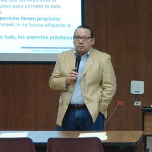

Conflicto de intereses en el sector público y privado

Carlos Alberto Arredondo Sibaja
Ingeniero Industrial y de Sistemas por la Universidad Autónoma de Coahuila, Licenciado en Derecho por la Universidad del Valle de México y master en Administración y Alta Dirección por la Universidad Iberoamericana. Tiene, además, estudios concluidos de maestría en Derecho, con acentuación en Derechos Humanos, en la Universidad Autónoma de Coahuila.
Se ha desarrollado profesionalmente en las áreas del periodismo, la docencia y el servicio público. Desde el mes de enero de 2015 dirige el Centro de Educación Jurídica, de la Academia Interamericana de Derechos Humanos, instituto del cual es investigador.
En el sector público ha ocupado diversos cargos, como Síndico del Ayuntamiento de Acuña, Coahuila; asesor parlamentario en el Congreso de Coahuila; coordinador de asesores de la oficina de la Consejera Lourdes López Flores, en el IFE, y consejero electoral del Instituto Electoral y de Participación Ciudadana de Coahuila. Actualmente es miembro de la Comisión de Selección del Consejo de Participación Ciudadana del Sistema Anticorrupción del Estado de Coahuila. También colabora en forma en forma permanente, desde el año 2016, en la elaboración del informe anual de la Relatoría Especial para la Libertad de Expresión de la Comisión Interamericana de Derechos Humanos.
Desde el año 2001 es colaborador permanente del periódico Vanguardia, como columnista y miembro de su Consejo Editorial. Además, es colaborador permanente de Grupo Radio Estéreo Mayrán, que transmite desde la ciudad de Torreón, Coahuila, y participa regularmente en espacios de opinión de diversos medios escritos y electrónicos.
Las principales líneas de investigación en las cuales trabaja actualmente son: la paridad de género en materia electoral, el debate como herramienta didáctica y la multidisciplinariedad en la enseñanza del Derecho y los derechos humanos.